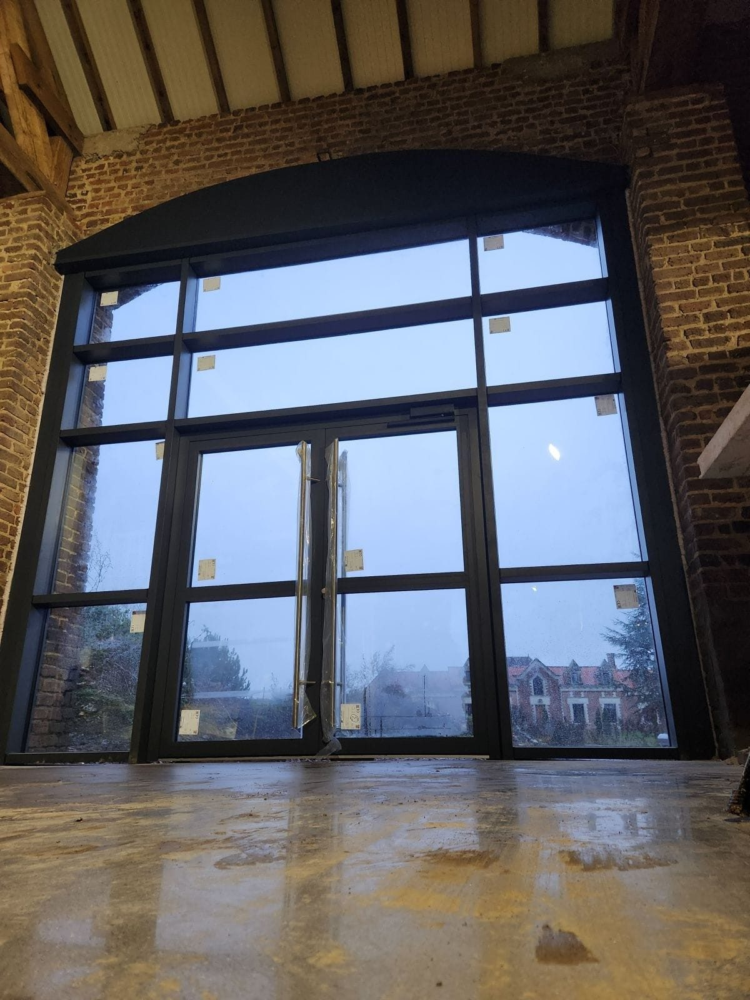

- Commune — Villers-Plouich
- Chantier — Transformation, commerce
Un gros projet de transformation à Villers-Plouich : une grande grange devenue la boucherie À la Belle Blonde.
Côté menuiseries : deux grands murs rideaux vitrés, les portes du bâtiment, et une porte sectionnelle industrielle pour l'accès des camions.
Passer d'un volume agricole à un commerce alimentaire, ça ne se joue pas qu'à l'intérieur. Ce sont les menuiseries qui transforment le bâtiment — la grange est devenue une vitrine.


